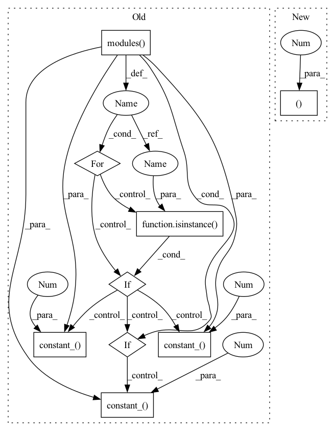

Pattern ID :905

Before Change
nn.Linear(1024, 1)
)
for m in self.modules():
if isinstance(m, nn.Conv2d):
nn.init.kaiming_normal_(m.weight, mode="fan_out", nonlinearity="leaky_relu")
if m.bias is not None:
nn.init.constant_(m.bias, 0)
elif isinstance(m, nn.BatchNorm2d):
nn.init.constant_(m.weight, 1)
nn.init.constant_(m.bias, 0)
elif isinstance(m, nn.Linear):
nn.init.normal_(m.weight, 0, 0.01)
nn.init.constant_(m.bias, 0)
def forward(self, input: Tensor) -> Tensor:
out = self.features(input)
out = self.avgpool(out)
After Change
nn.LeakyReLU(negative_slope=0.2, inplace=True)
)
self.avgpool = nn.AdaptiveAvgPool2d((14, 14))
self.fc = nn.Sequential(
nn.Linear(512 * 14 * 14, 1024),
In pattern: SUPERPATTERN
Frequency: 3
Non-data size: 9
Instances
Fragment ID: 1960990
Project Name: lornatang/esrgan-pytorch
Commit Name: 91405c6093508419a44d6313646c88ec681a90d2
Time: 2020-10-21
Author: liuchangyu1111@gmail.com
File Name: esrgan_pytorch/model.py
Class Name: Discriminator
Method Name: __init__
Parent Class: nn.Module
Fragment ID: 1960984
Project Name: lornatang/esrgan-pytorch
Commit Name: 91405c6093508419a44d6313646c88ec681a90d2
Time: 2020-10-21
Author: liuchangyu1111@gmail.com
File Name: esrgan_pytorch/model.py
Class Name: Discriminator
Method Name: __init__
Parent Class: nn.Module
Fragment ID: 1961016
Project Name: yeyupiaoling/voiceprintrecognition-pytorch
Commit Name: 1b3e522b8bc2c0002ef6447094f8f57c6e4bdabe
Time: 2021-07-03
Author: yeyupiaoling@foxmail.com
File Name: utils/resnet.py
Class Name: ResNetFace
Method Name: __init__
Parent Class: nn.Module
Fragment ID: 1960977
Project Name: lornatang/srgan-pytorch
Commit Name: 5cf838428d2fd83fd2fc39b794fdd8fb82ea91ed
Time: 2020-10-21
Author: liuchangyu1111@gmail.com
File Name: srgan_pytorch/model.py
Class Name: Discriminator
Method Name: __init__
Parent Class: nn.Module